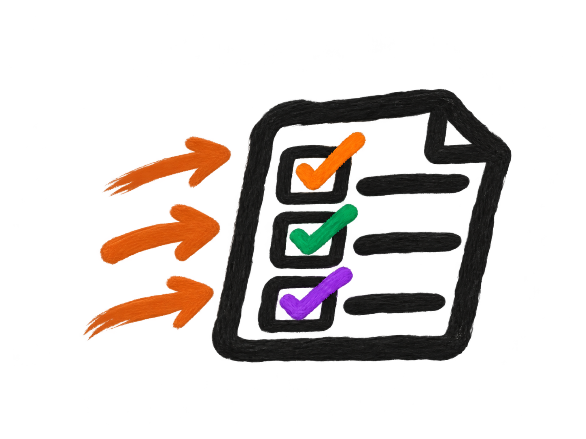

Test 3 topics

Start with the checklistCheck what you need to revise (opens in a new tab)How should I revise?
- CheckUse your checklist to choose what to revise.
- LearnRead a knowledge organiser or use a Smart Bank.
- RecallTest what you remember without looking.
- PractiseTry a quiz or exam-style question pack.
- ReviewGo back to anything you found difficult.
Knowledge organisers
Review key facts, then recall from memory.
Multiple-choice quizzes
Answer quick questions and check your understanding.
Exam-style questions
Choose a level, then a question pack.
Developing
Secure
Extending
Bacteria (opens in a new tab)Cell Division (opens in a new tab)Cell Structure (opens in a new tab)Disease (opens in a new tab)Exercise (opens in a new tab)Levels of Organisation (opens in a new tab)Microscopes (opens in a new tab)Muscles (opens in a new tab)Respiration (opens in a new tab)Specialised Cells (opens in a new tab)
Other resources Videos and websites
Bitesize: Plant vs. Animal Cells (opens in a new tab)Youtube: Structure of Cells (opens in a new tab)Seneca: Specialised Cells (opens in a new tab)Oak Academy: Cell Division (opens in a new tab)Bitesize: Communicable Disease (opens in a new tab)Seneca: Testing for Bacteria (opens in a new tab)Bitesize: Antibiotics and Vaccines (opens in a new tab)Oak Academy: Cellular Respiration (opens in a new tab)Youtube: Respiration (opens in a new tab)Oak Academy: Respiration and Exercise (opens in a new tab)
Knowledge organisers
Review key facts, then recall from memory.
Multiple-choice quizzes
Answer quick questions and check your understanding.
Exam-style questions
Choose a level, then a question pack.
Developing
Acid Rain (opens in a new tab)Acids and Alkalis (opens in a new tab)Changes of State (opens in a new tab)Chromatography (opens in a new tab)Distillation (opens in a new tab)Elements (opens in a new tab)Filtration (opens in a new tab)Litmus Paper (opens in a new tab)Neutralisation (opens in a new tab)Other Indicators (opens in a new tab)Solids, Liquids and Gases (opens in a new tab)Solutions (opens in a new tab)pH Scale (opens in a new tab)
Secure
Acids and Alkalis (opens in a new tab)Changes of State (opens in a new tab)Chromatography (opens in a new tab)Distillation (opens in a new tab)Elements (opens in a new tab)Filtration (opens in a new tab)Litmus Paper (opens in a new tab)Neutralisation (opens in a new tab)Other Indicators (opens in a new tab)Solids, Liquids and Gases (opens in a new tab)Solutions (opens in a new tab)pH Scale (opens in a new tab)
Extending
Acids and Alkalis (opens in a new tab)Changes of State (opens in a new tab)Chromatography (opens in a new tab)Distillation (opens in a new tab)Elements (opens in a new tab)Filitration (opens in a new tab)Neutralisation (opens in a new tab)Other Indicators (opens in a new tab)Solids, Liquids and Gases (opens in a new tab)Solutions (opens in a new tab)pH Scale (opens in a new tab)
Other resources Videos and websites
Bitesize: Atoms, Elements and Compounds (opens in a new tab)Youtube: Chemical Compounds (opens in a new tab)Oak Academy: States of Matter (opens in a new tab)Oak Academy: Boiling and Condensing (opens in a new tab)Youtube: Changes of State (opens in a new tab)Bitesize: Acids and Bases (opens in a new tab)Oak Academy: The pH Scale (opens in a new tab)Youtube: Indicators (opens in a new tab)Cognito: Neutralisation (opens in a new tab)Youtube: Neutralisation Reactions (opens in a new tab)
Knowledge organisers
Review key facts, then recall from memory.
Multiple-choice quizzes
Answer quick questions and check your understanding.
Exam-style questions
Choose a level, then a question pack.
Developing
Secure
Other resources Videos and websites
Save My Exams: Contact Forces (opens in a new tab)Bitesize: Variables (opens in a new tab)Oak Academy: Force Arrows (opens in a new tab)Bitesize: Balanced Forces (opens in a new tab)Youtube: Resultant Forces (opens in a new tab)Seneca: Resultant Forces (opens in a new tab)Seneca: Force and Acceleration (opens in a new tab)Oak Academy: Mass and Weight (opens in a new tab)Youtube: Mass vs. Weight (opens in a new tab)